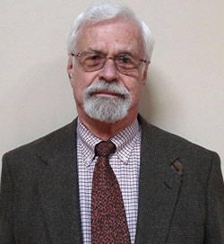

Statement of Purpose

Now that I have retired from the State University of New York at Albany (UAlbany), I have established this website for the purpose of making my publications and my translations available to those who might be interested. It is my hope that the discussion of works by Machado, Unamuno, Bécquer, Sábato, Rulfo, etc., as well as the discussion of Jungian psychology, will contribute to a better understanding of human nature and the meaning of our existence.
I have posted here the complete text of my book: El pensamiento religioso y filosófico de Antonio Machado as well as an English translation of this work: The Religious and Philosophical Thought of Antonio Machado. I have also posted the complete text of my articles. I have translated all the poems of Antonio Machado, as well as his philosophical work, From the Apocryphal Songbook (Del cancionero apócrifo), some excerpts from Juan de Mairena, and the biography of Machado by his brother: The Final Solitude of the poet Antonio Machado (Memories of his brother José). I have also translated Unamuno's essay "My Religion" (Mi religión) and a selection of poems dealing with religion from his books: Poetry (Poesías), Rosary of Lyrical Sonnets (Rosario de sonetos líricos), and the entire work, The Christ of Velazquez (El Cristo de Velázquez). I have now translated the Rimas (Poems) and the Leyendas (Legends) of Gustavo Adolfo Bécquer. Any of these works may be cited or copied, and credit should be given to the source of this material.
The two lectures—"The Undiscovered Self" and "The Art of Loving"—help to explain the basic philosophy I followed in my teaching, and in my publications.
Declaración de Propósito
Después de retirarme de la Universidad de Nueva York en Albany (UAlbany), he hecho este website para hacer accesibles mis publicaciones y mis traducciones para cualquier persona que quisiera consultarlas. Espero que la discusión de las obras de Machado, Unamuno, Bécquer, Sábato, Rulfo, etc., y de la psicología junguiana, nos ayude a entender un poco más sobre la naturaleza humana, y el sentido de nuestra vida.
He puesto aquí el texto completo de mi libro, El pensamiento religioso y filosófico de Antonio Machado, y una traducción al inglés, The Religious and Philosophical Thought of Antonio Machado. También he puesto el texto completo de mis artículos. He traducido todos los poemas de Antonio Machado, su obra filosófica Del Cancionero apócrifo, unos extractos de Juan de Mairena, y la biografía de Antonio Machado por su hermano: Últimas soledades del poeta Antonio Machado (Recuedos de su hermano José). También he traducido el ensayo "Mi religión" de Unamuno y una selección de sus poemas religiosas de los libros: Poesías, Rosario de sonetos líricos, y el libro entero, El Cristo de Velázquez. Ahora he traducido las Rimas de Gustavo Adolfo Bécquer. Cualquier persona que quiera copiar o citar estas obras puede hacerlo, dando crédito a la fuente o el sitio donde han sido publicadas.
Las dos ponencias (en inglés)—"The Undiscovered Self" y "The Art of Loving"—ayudan a explicar la filosofía que he seguido en mis classes, y en mis publicaciones.